01

Karting
La compétition réelle, du sec à la pluie : départs, dépassements, gestion de course. L'école du corps à corps en piste.
Association de sport automobile
Patrice a couru dans les années 80. Thomas reprend la piste. TPRacing construit la suite, avec un cap assumé : la course automobile en Caterham.
Qui sommes nous
Chez les Papone, la piste se transmet. Des paddocks de karting des années 80 à la Formule Ford, Patrice a couru avant de passer le volant. En 2021, père et fils fondent TPRacing, Thomas Papone Racing, pour structurer la progression de Thomas vers la course automobile.
TPRacing n'est pas qu'une structure sportive : c'est un projet qui se développe comme une marque, avec sa communication, ses contenus, ses partenaires et sa communauté. Suivre l'association, c'est voir un projet de course se construire pour de vrai, étape par étape.
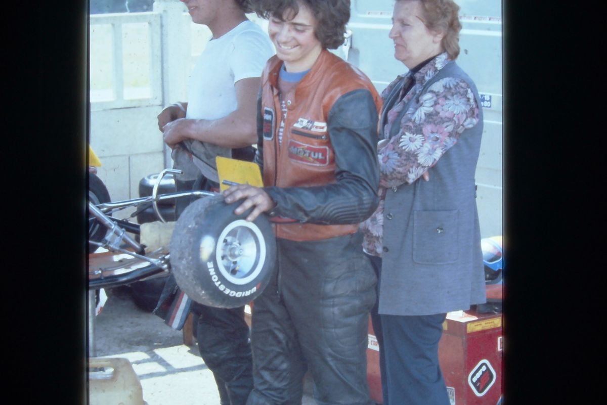
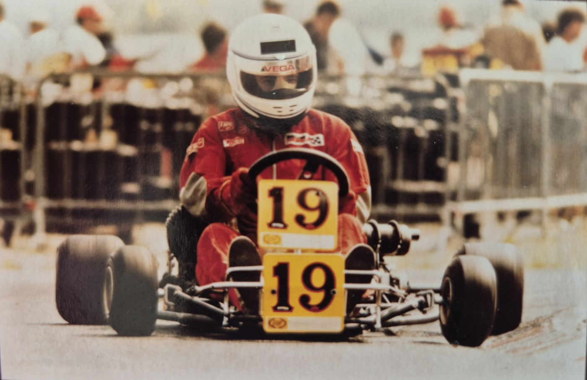
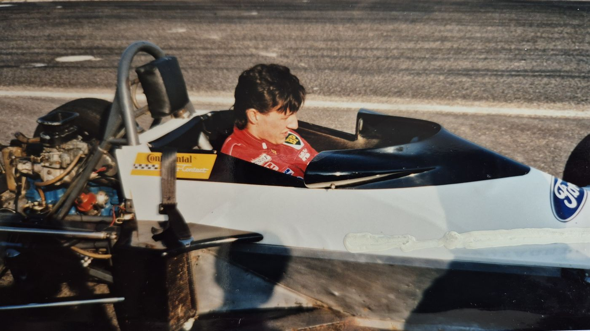
La trajectoire
Chaque discipline prépare la suivante : le combat en piste s'apprend en karting, la rigueur se travaille sur simulateur, et la course automobile guide tout le projet.
La compétition réelle, du sec à la pluie : départs, dépassements, gestion de course. L'école du corps à corps en piste.

L'entraînement permanent sur iRacing : régularité, trajectoires, setups. Le laboratoire du pilotage, disponible chaque semaine.

Le passage en voiture, engagé à l'école FEED Racing France, avec un objectif clair : courir en championnat via le programme Caterham.
Nous soutenir
Le sponsoring sportif ne se limite plus à un logo sur une carrosserie : la valeur est dans le contenu. En soutenant TPRacing, votre marque s'intègre à une histoire suivie au quotidien et bénéficie d'un suivi transparent de son partenariat.
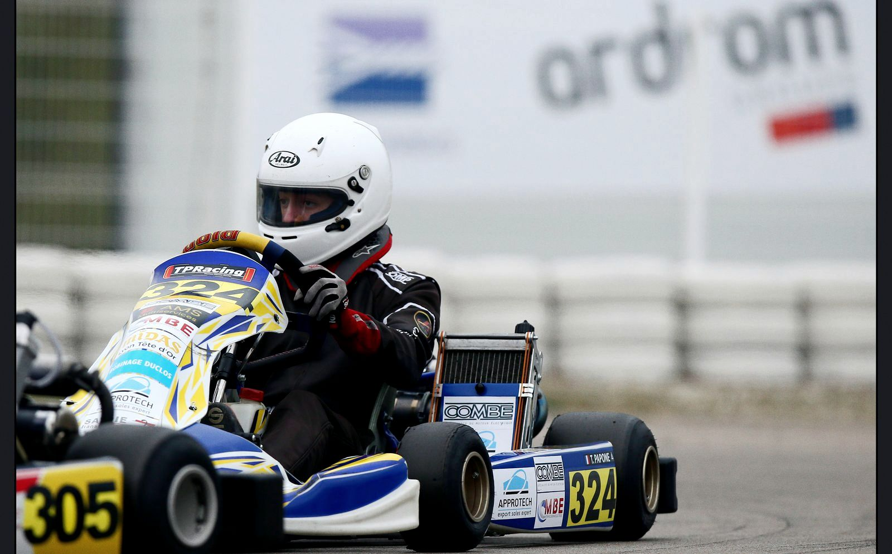
Présence dans les contenus publiés autour du projet : publications, vidéos, coulisses. Votre marque vit dans l'histoire, pas seulement sur un sticker.
Un projet familial, authentique et rigoureux : la progression d'un jeune pilote qui se construit sans raccourcis.
Des comptes rendus réguliers publiés par l'association : vous savez ce que votre soutien finance et ce qu'il vous rapporte en visibilité.
En piste
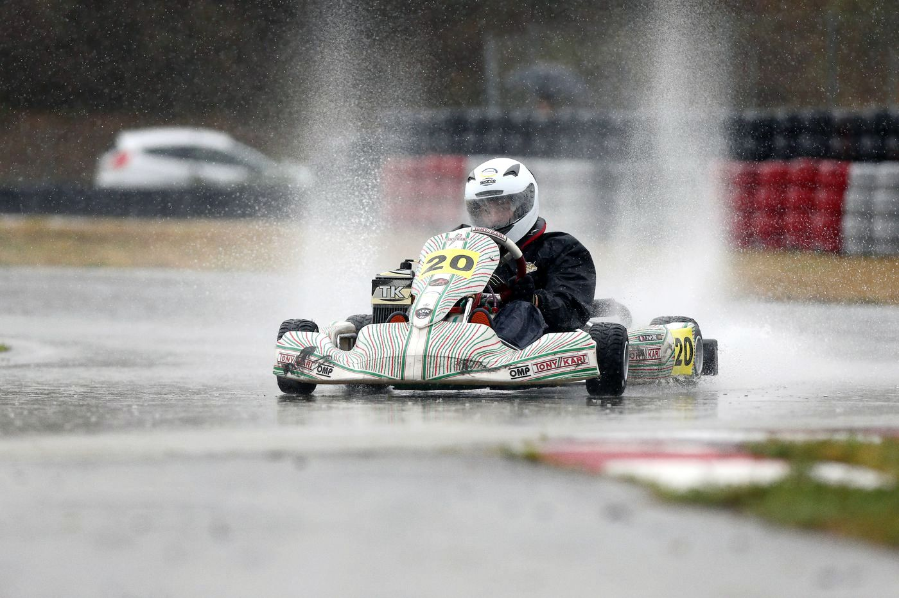
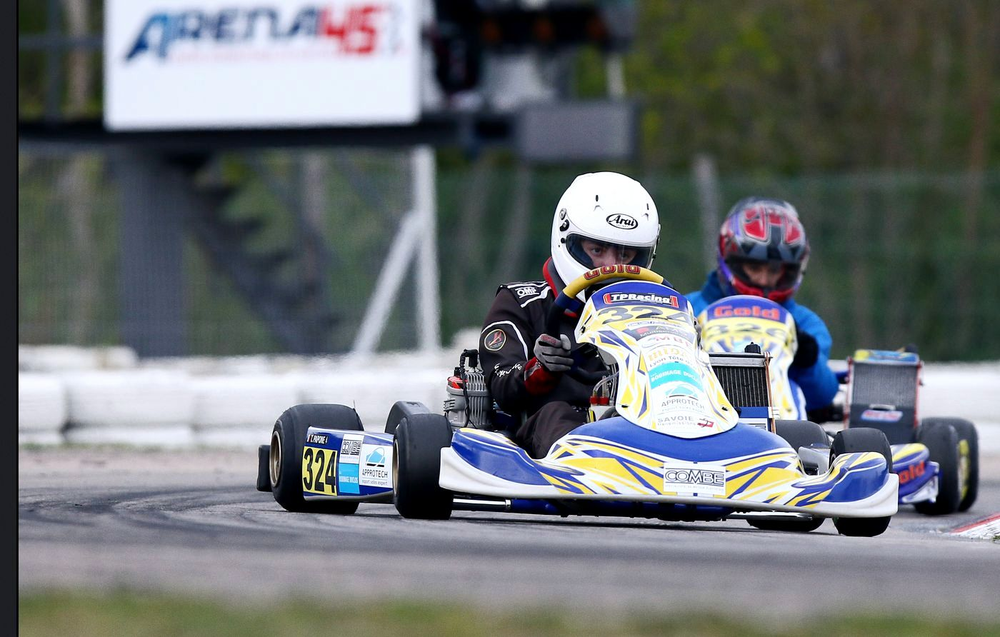
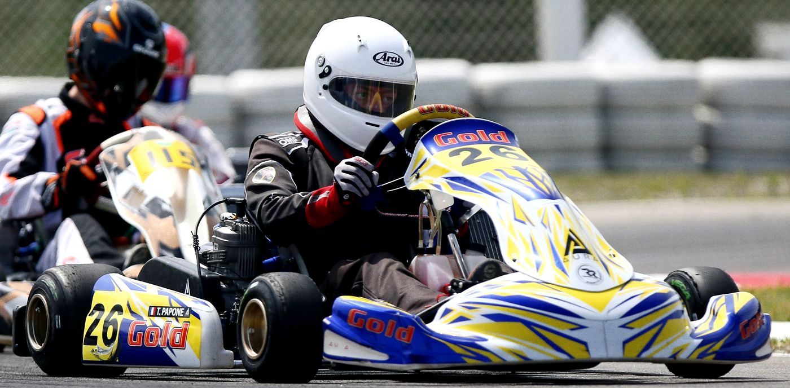
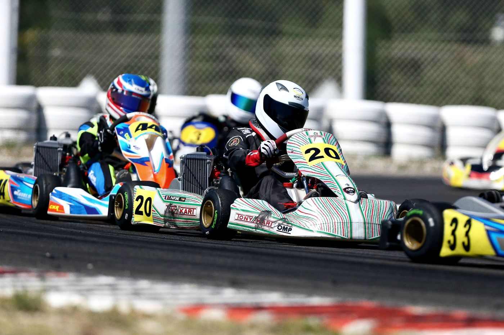
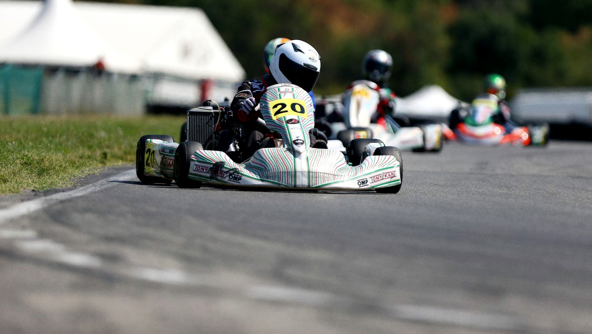
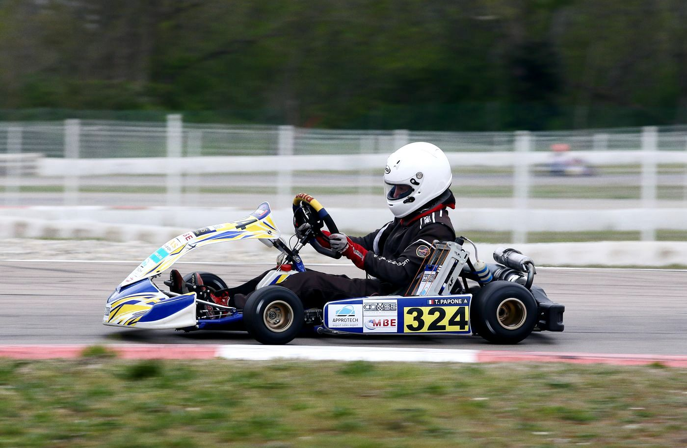
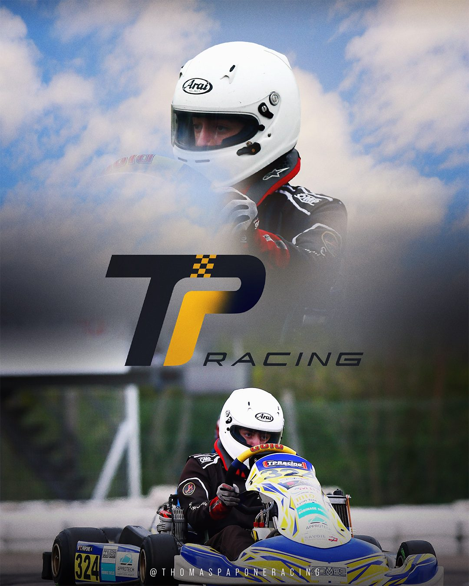
Le pilote
Pilote et co-fondateur de l'association. Formé en karting de compétition, affûté sur simulateur, passé par l'école FEED Racing France. Il partage son parcours et les coulisses du projet sur ses réseaux.